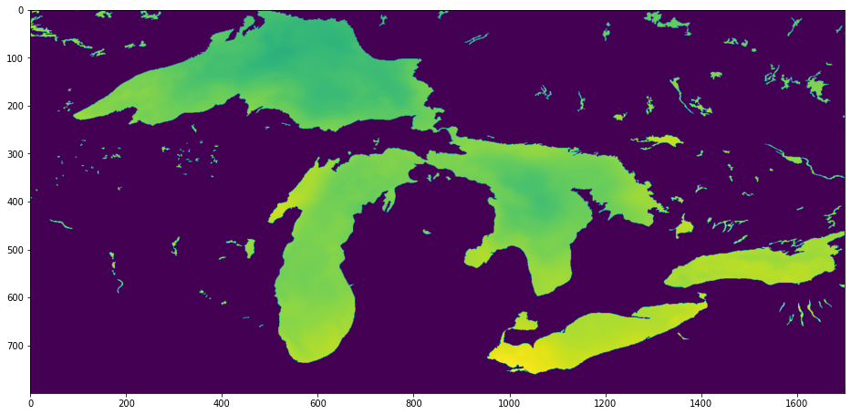

import sys
# zarr and zarr-eosdis-store, the main libraries being demoed
!{sys.executable} -m pip install zarr zarr-eosdis-store
# Notebook-specific libraries
!{sys.executable} -m pip install matplotlibZarr Example
imported on: 2023-05-30
This notebook is from NASA’s Zarr EOSDIS store notebook
The original source for this document is https://github.com/nasa/zarr-eosdis-store
zarr-eosdis-store example
Install dependencies
Important: To run this, you must first create an Earthdata Login account (https://urs.earthdata.nasa.gov) and place your credentials in ~/.netrc e.g.:
machine urs.earthdata.nasa.gov login YOUR_USER password YOUR_PASSWORDNever share or commit your password / .netrc file!
Basic usage. After these lines, we work with ds as though it were a normal Zarr dataset
import zarr
from eosdis_store import EosdisStore
url = 'https://archive.podaac.earthdata.nasa.gov/podaac-ops-cumulus-protected/MUR-JPL-L4-GLOB-v4.1/20210715090000-JPL-L4_GHRSST-SSTfnd-MUR-GLOB-v02.0-fv04.1.nc'
ds = zarr.open(EosdisStore(url))View the file’s variable structure
print(ds.tree())/
├── analysed_sst (1, 17999, 36000) int16
├── analysis_error (1, 17999, 36000) int16
├── dt_1km_data (1, 17999, 36000) int16
├── lat (17999,) float32
├── lon (36000,) float32
├── mask (1, 17999, 36000) int16
├── sea_ice_fraction (1, 17999, 36000) int16
├── sst_anomaly (1, 17999, 36000) int16
└── time (1,) int32Fetch the latitude and longitude arrays and determine start and end indices for our area of interest. In this case, we’re looking at the Great Lakes, which have a nice, recognizeable shape. Latitudes 41 to 49, longitudes -93 to 76.
lats = ds['lat'][:]
lons = ds['lon'][:]
lat_range = slice(lats.searchsorted(41), lats.searchsorted(49))
lon_range = slice(lons.searchsorted(-93), lons.searchsorted(-76))Get the analysed sea surface temperature variable over our area of interest and apply scale factor and offset from the file metadata. In a future release, scale factor and add offset will be automatically applied.
var = ds['analysed_sst']
analysed_sst = var[0, lat_range, lon_range] * var.attrs['scale_factor'] + var.attrs['add_offset']Draw a pretty picture
from matplotlib import pyplot as plt
plt.rcParams["figure.figsize"] = [16, 8]
plt.imshow(analysed_sst[::-1, :])
None
In a dozen lines of code and a few seconds, we have managed to fetch and visualize the 3.2 megabyte we needed from a 732 megabyte file using the original archive URL and no processing services